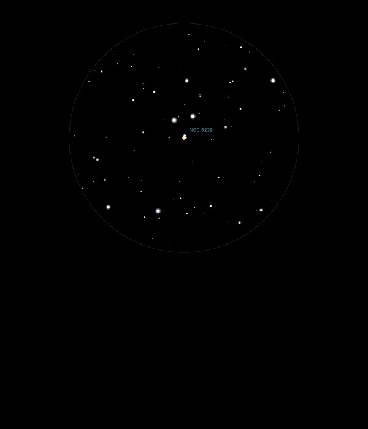

NGC 6229
Globular Cluster in Hercules
NGC 6229
Mag 9.4
GC Class IV
03/09/13
Comparing Globular Clusters
At Mag
9.4 appears only as a fuzzy blob, like an out of focus star
However,
quite bright and easy to find
07/08/16
This Mag 9.4 Globular Cluster observed just after M92 and
before that M13 which gave a nice scaling of size, with M92
about half that of M13 and twice that of NGC 6229
A small tight ball, quite bright but with no stars resolved
within it
Forms a nice equilateral triangle with HIP 82113 at Mag 8.0
and HIP 82117 at Mag 8.35